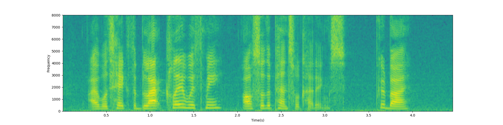
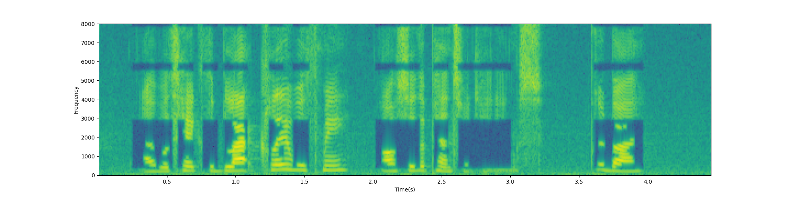
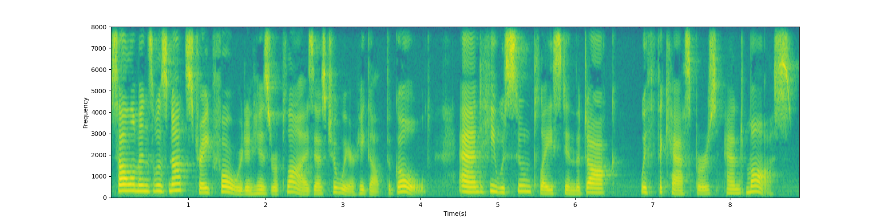
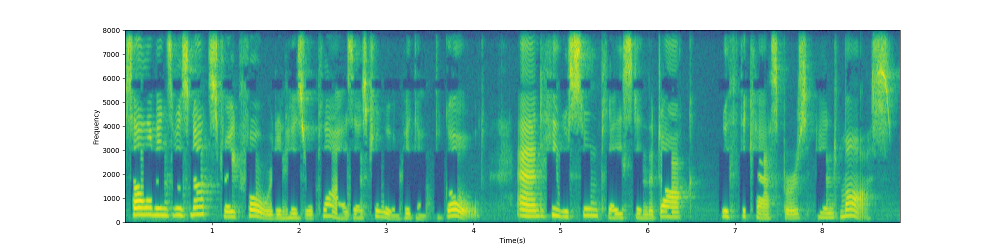
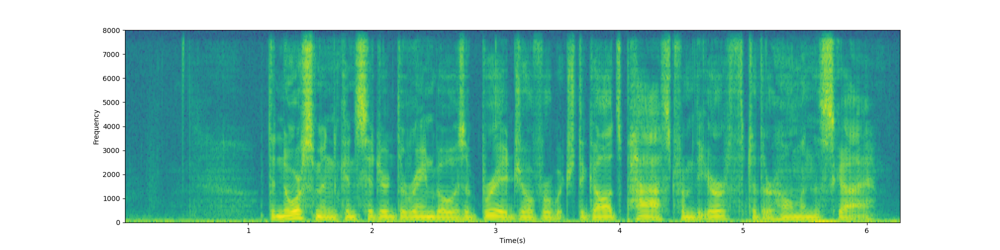
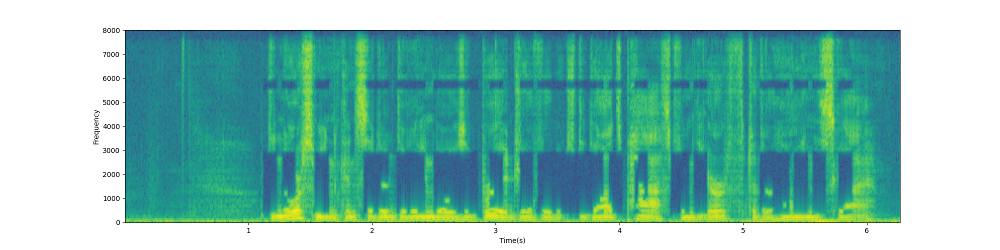
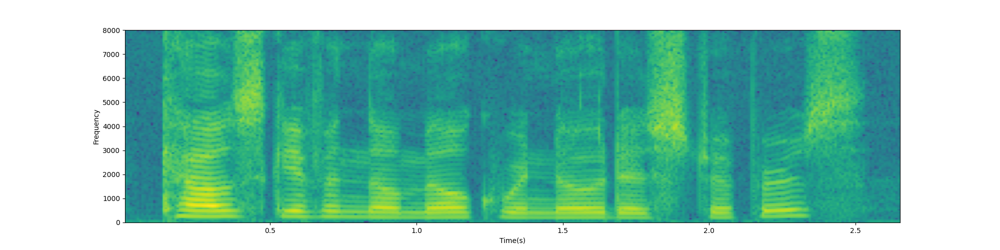
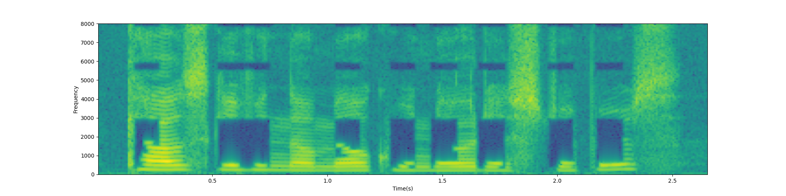

Original: LibriSpeech(1580-141084-0010.wav)
Text: "I will take the black clay with me also the pencil cuttings, goodbye"
Adversarial: LibriSpeech(1580-141084-0010.wav)

Transcription(Google): "goodbye"(WER=0.923)
Transcription(DeepSpeech): "at lis take the black clany me ilse beconted the but"(WER=0.692)
Original: LJSpeech(LJ012-0140.wav)
Text: "Solomon's was not straightforward in his replies as to where he got the gold, and he was soon placed in the dock with the caspers and moss"
Adversarial: LJSpeech(LJ012-0140.wav)

Transcription(Google): "gold and he was soon placed in the dark with the Casper's and Moe"(WER=0.629)
Transcription(DeepSpeech): "ls as not sleep forward at re plos pede pi gold and he seen pasein the dork e e clasppers in loss"(WER=0.851)
Original: VCTK(p363_016.wav)
Text: "The Norsemen considered the rainbow as a bridge over which the gods passed from the earth to their home in the sky"
Adversarial: VCTK(p363_016.wav)

Transcription(Google): "Norseman considered the windows a bridge from the Earth to the sky"(WER=0.590)
Transcription(DeepSpeech): "lors beconsidered hewas pote wat paft e irth tothe spar"(WER=1.0)
Original: TIMIT(SI1022.wav)
Text: "Cows given their milk were known as stripper"
Adversarial: TIMIT(SI1022.wav)

Transcription(Google): "housekeeping no milk will notice stripp"(WER=0.875)
Transcription(DeepSpeech): "asske no mor ladi etis"(WER=1.0)